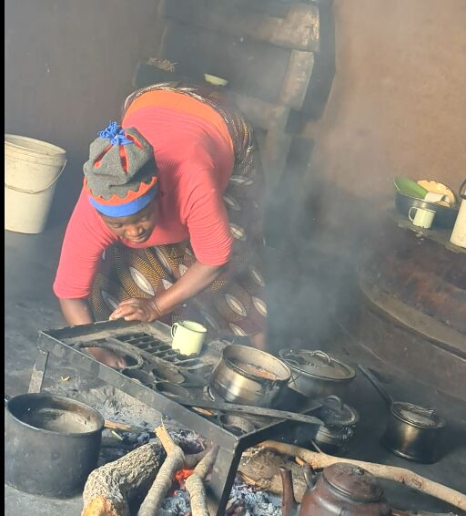
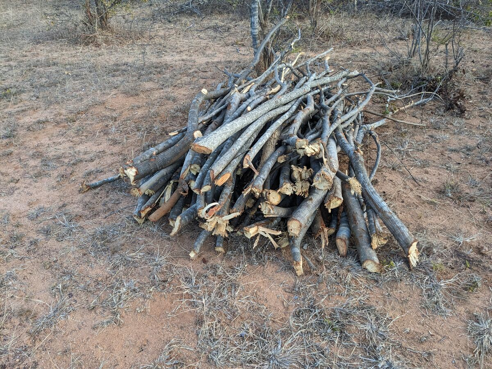
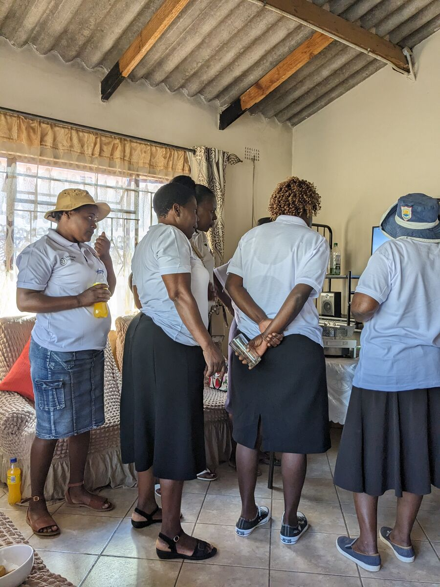
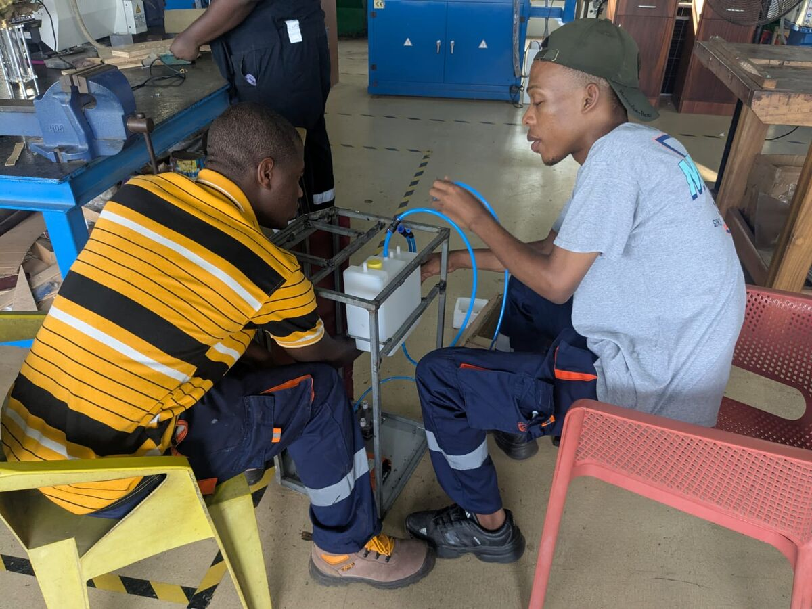
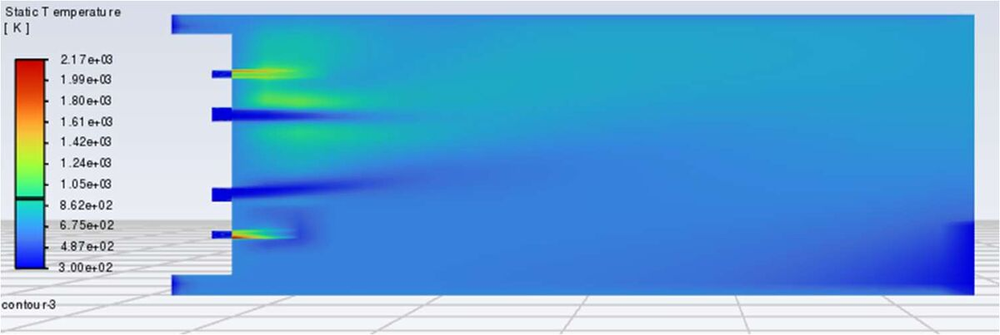
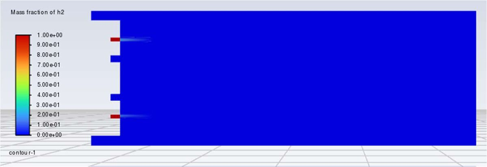
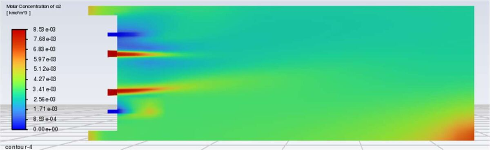
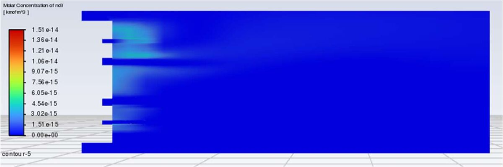
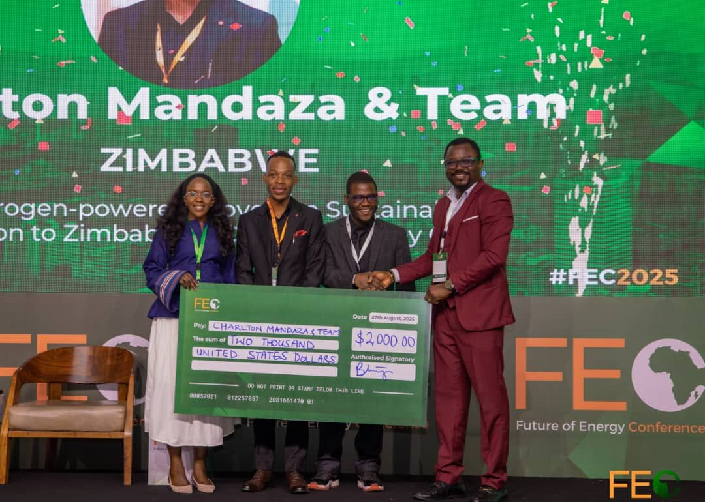
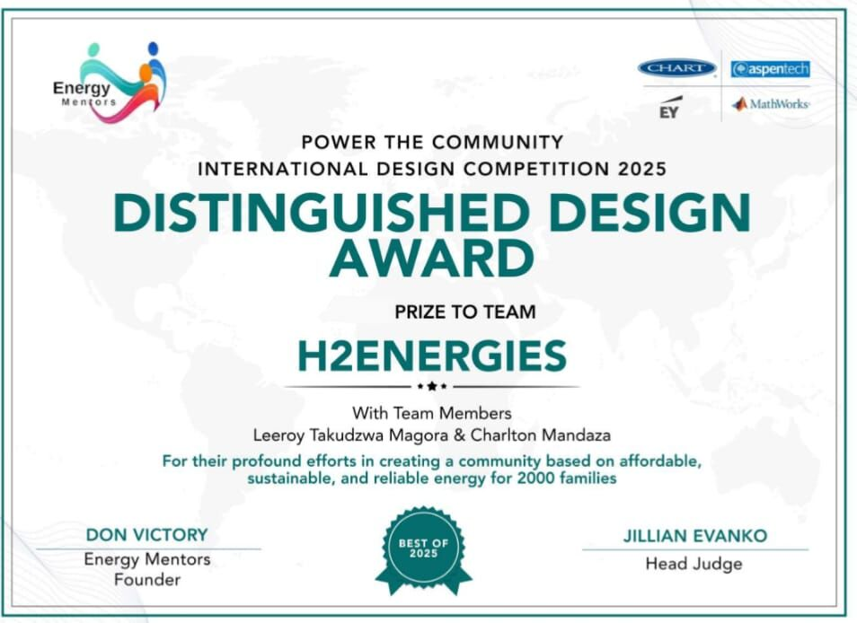

Fire safety engineer · Hydrogen founder · Zimbabwe / Ghent
I built a hydrogen cookstove. Then I had to prove it was safe to bring indoors.
This page follows that path: from firewood kitchens in rural Zimbabwe, to a working hydrogen stove, to the computational hydrogen safety work I now do as a fire safety engineering student.
I am Leeroy Takudzwa Magora, a mechanical engineer (BSc, Ashesi University) on the Erasmus Mundus International Master of Science in Fire Safety Engineering at Ghent University, and founder of H2ENERGIES.
2023 – 2024
Where it started: cooking on firewood
In rural Zimbabwe nearly every household cooks on wood. I grew up around these kitchens in Rusape. The smoke stays in the room, the women and children breathe it, and the trees around the village keep disappearing.
I started H2ENERGIES with my co-founder Charlton Mandaza to ask whether hydrogen made from sunlight and water could replace that fire. We ran co-design workshops with women in the community, and in 2024 we published our case for green hydrogen as a cooking fuel in Zimbabwe.



- PublicationMandaza, C. & Magora, L. (2024). Green Hydrogen Production: A Potential Sustainable Solution to Zimbabwe's Cooking Fuel Shortage. SEED Journal, 2(2).
- IIT Ropar & Energy Mentors USA, 2024Research internship on large-scale solar hydrogen production in water-scarce deserts. Electrolyser sizing and a MATLAB/DWSIM digital twin. Certificate of Excellence.
2024 – 2025
Hydrostove 1.0: design, simulation, fabrication
For our BSc capstone at Ashesi, Charlton and I designed and built a hydrogen cookstove. A solar-powered PEM electrolyser produces the hydrogen and the burner uses it as it is made, so there is no bulk storage in the home.
I modelled the burner in ANSYS Fluent before we cut any metal: premixed hydrogen and air, k-ε turbulence, staged primary and secondary air. We then checked the burner stand and frame in SolidWorks for thermal load and fatigue, fabricated the stove, and tested it.



Combustion CFD of the burner (ANSYS Fluent)




2025
The question every funder asked
The stove works. But is it safe to put hydrogen inside someone's home?
We won awards and the funders had money ready. Still, every conversation ended at the same place: leaks, ignition, a kitchen with no gas inspector and no trained operator. I could show them a clean flame. I could not yet show them a safety case. That gap is why I went to study fire safety engineering.


2026
2026 SFPE Emerging Energy Technologies Summit · Ottawa · Poster
Pre-deployment hydrogen safety assessment for a community-scale electrolytic cooking system in a semi-open rural structure
Hydrogen safety frameworks are written for industrial sites and refuelling stations. They say little about a small electrolyser feeding a stove in a passively ventilated rural kitchen. At Ghent I put together a team with Mochammad Faiq Al-Harits and Aren Mahfouz to assess the H2ENERGIES Community Kitchen in Rusape before any hardware is installed.
The abstract was accepted to the summit's hydrogen track, and the SFPE Foundation awarded me a Student Travel Grant to present it.
Method
Identify credible leak scenarios and feed leak frequencies into the risk model.
Airflow through the structure's gaps and openings under Manicaland climate conditions.
Hydrogen concentration over time for a range of leak rates and locations. Where does a flammable cloud form?
Ignition probability, harm to occupants, and the leak rate at which risk stops being acceptable.
The scenario we assess
Why hydrogen needs its own safety case
What the assessment gives the design team
- The maximum electrolyser output the structure can safely take as designed.
- The ventilation changes needed to bring risk down to an acceptable level.
- Where equipment can and cannot sit, to keep ignition probability low in normal and fault conditions.
After the first FDS runs we revised the kitchen design, adding roof-level hatches and a sprinkler system, and iterated until the risk met the ALARP criterion. The method transfers to other off-grid hydrogen cooking installations.
Jan – May 2027
MSc thesis · UPC Barcelona · January to May 2027
Next: ignition probability in hydrogen QRA
I will write my MSc thesis at UPC Barcelona, the final semester of the IMFSE programme. It compares the probabilistic ignition models used in quantitative risk assessment of hydrogen installations. I will implement the models in a common event-tree structure with the HyRAM Python libraries, using a hydrogen refuelling station as the case study, to show how much the choice of ignition model changes the final risk figure.
Where I want to take this
Every step so far has been about one thing: making hydrogen something people can accept near them. The cookstove taught me that acceptance depends on a safety case built on validated models. I want to spend a PhD building those models, with CFD as the method, for the safety-critical hydrogen phenomena where they are still missing.
- Erasmus Mundus Joint Masters ScholarshipIMFSE: Ghent, Lund, UPC Barcelona. 2025 – 2027.
- SFPE Foundation Student Travel Grant2026 Emerging Energy Technologies Summit.
- BSc Mechanical Engineering, Ashesi UniversityMastercard Foundation Scholar. Capstone graded A. 2025.
- FellowshipsbeVisioneers: The Mercedes-Benz Fellowship, Resolution Project, Melton Foundation, OSUN.